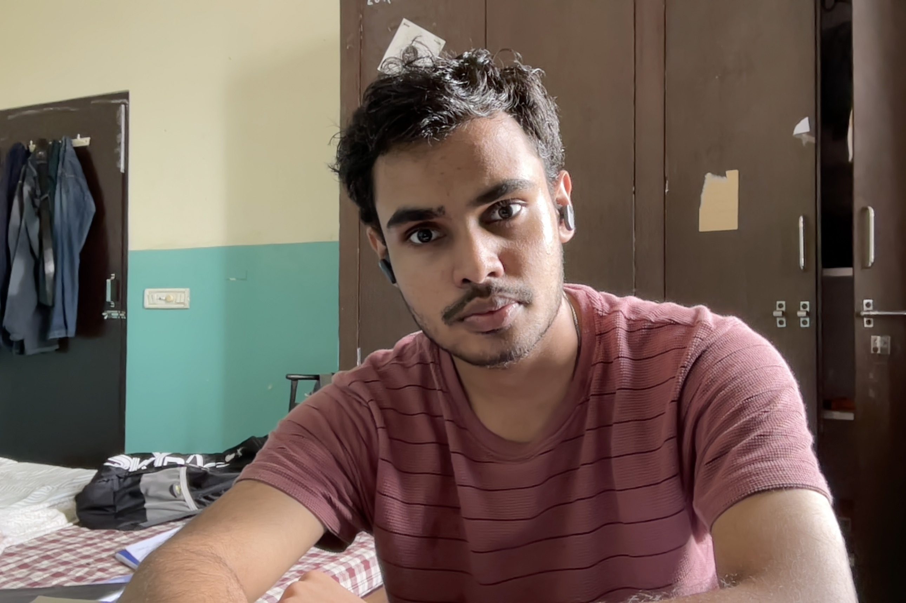

Sarvesh Kumar Mishra
Computer Science Engineering Student & Tech Enthusiast

About Me
- "I am currently pursuing my Bachelor of Technology (B.Tech) in Computer Science Engineering at SKIT, Jaipur.
I love turning logic into code, solving algorithm challenges, and exploring modern tech stacks.
Apart from pure core engineering, I am passionate about effective communication and teamwork."
Education
- Bachelor of Technology (B.Tech) - Computer Science Engineering
- Swami Keshvanand Institute of Technology (SKIT), Jaipur
- Current Status: 1st Year (2nd Semester)
- Senior Secondary / Class 12th
- Result: First Division
- Class 11th
- Result: 92.7%
- Secondary School / Class 10th
- Result: 91%
Technical & Soft Skills
- Technical Skills: C, C++, Object-Oriented Programming (OOPs), HTML5,
- Soft Skills: Team Collaboration, Leadership
Achievements & Interests
- Sports & Athletics
- National Level Athlete: Competed in Taekwondo at the DAV National Athletics, which instilled a core foundation of physical discipline, focus, and resilience
- Multi-Sport Enthusiast: Actively participated in various competitive sports tournaments at school and regional levels, honing team dynamics and strategic thinking under pressure
- Media & Entertainment
- Cinematic Enthusiast & Critic: Deeply passionate about world cinema, storytelling, and analyzing narrative structures in films.
- Acoustic & Digital Curation: Music lover who enjoys exploring diverse genres, tracking music trends, and building curated playlists for focus, relaxation, and high-energy coding sessions.
- Adventures & Lifestyle
- Geographic Exploration & Outings: Passionate about weekend traveling, discovering local cultures, exploring architectural spots, and organizing group outings with friends to refresh creative thinking
Contacts
sarveshcfcl@gmail.com
7976645952
Linkdin:
Linkdin